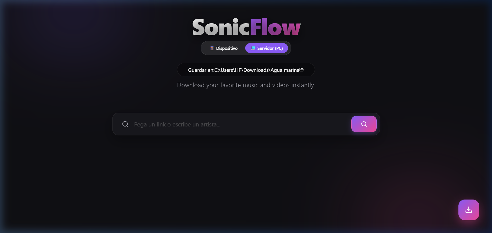

SonicFlow convierte cualquier link de YouTube o Spotify en un archivo MP3 o MP4 de alta calidad — sin límites, sin suscripción.
Descargar SonicFlow SonicFlow-Setup-1.0.0.exe · ~154 MB · Windows 10/11
Una sola app para buscar, previsualizar y descargar tu música favorita.
Pega un link de YouTube o Spotify, o escribe el nombre de un artista. Soporte para playlists completas.
Descarga en audio de alta calidad (MP3) o video (MP4). Cola de hasta 2 descargas simultáneas.
Previsualiza cualquier canción antes de descargar, con controles de play, pausa y barra de progreso.
Instalador .exe con un doble clic. Se agrega al escritorio y menú inicio automáticamente.
Elige dónde guardar tus archivos con un selector visual de carpetas integrado en la app.
Diseño moderno y elegante con animaciones suaves. Minimiza a la bandeja del sistema.
Tres pasos y listo — no necesitas saber nada de tecnología.
Haz clic en el botón de descarga. Se descargará el archivo SonicFlow-Setup-1.0.0.exe.
Haz doble clic en el archivo descargado. Si Windows muestra una advertencia, haz clic en "Más información" → "Ejecutar de todas formas". Esto es normal para apps sin firma de pago.
El ícono aparecerá en tu escritorio. Ábrelo, pega un link de YouTube o Spotify y descarga tu música. Así de fácil.
Gratis, rápido y sin anuncios. Solo para Windows 10 y 11.
Descargar SonicFlow Gratis Windows 10 / 11 · 64-bit